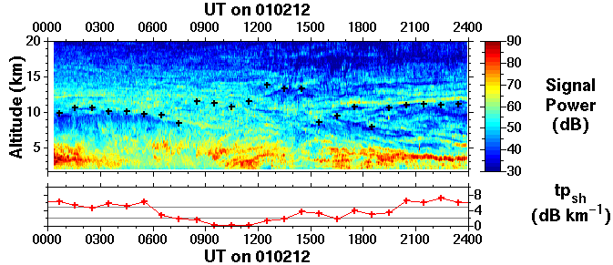

Lower VHF radar signals are either backscattered or parially
reflected from small magnitude (< 10-6) metre-scale
irregularities of radio refractive index; the radar return signal
power is related to the vertical gradient of refractive index. Below
approximately 8 km this depends largely on the "humidity field",
i.e. the specific humidity and its vertical gradient, which can give
rise to characteristic signatures in the radar return signal
power. Rain fall can also give rise to a characteristic signature in
the radar return signal power at these altitudes. Above approximately
8 km, however, variations of radar return signal power depend
primarily on the static stability of the atmosphere. It is thus
possible to infer the tropopause altitude, indicated by the crosses,
and sharpness, indicated by the value of tpsh, from an
objective algorithm.
Tropopause altitude/sharpness determination algorithm:
The vertical beam signal power, in dB units, is smoothed in altitude
by an 1800 m running mean and then the vertical gradient is calculated
over the same interval. The tropopause altitude is that at which the
gradient has its maximum value and tpsh is equal to this
value.
- tpsh > 5 dB km-1 corresponds to a
definite tropopause
- tpsh < 2 dB km-1 corresponds to an
indefinite tropopause
- 2 dB km-1 < tpsh < 5 dB km-1
corresponds to a tropopause of intermediate sharpness
For the data shown above this algorithm has been applied to 1 hour
median profiles of radar return signal power. The radar is effectively
detecting a 'static stability tropopause', i.e. where the
Brunt-Väisälä frequency changes most rapidly with
altitude between (low) tropospheric and (high) stratospheric
values. In the case of an indefinite tropopause, i,e between 0800 and
1400 UT, there is only a very gradual increase in static stability
with increasing altitude and so the tropopause altitude inferred from
the algorithm does not necessarily have any significance; between 1200
and 1500 UT the algorithm is merely picking out the feature which
causes the most rapid increase of signal strength/static stability
with altitude. The reason for smoothing and taking gradients over
1800 m is to reject any small (vertical) scale features which are
characterised by sharp increases in signal strength. Even so the
algorithm does sometimes pick out such features, particularly in the
case of frontal zones, which can also be characterised by an
enhancement of static stability, when they are close to the actual
tropopause level; such errors can typically be easily identified "by
eye".